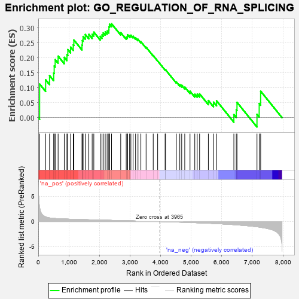
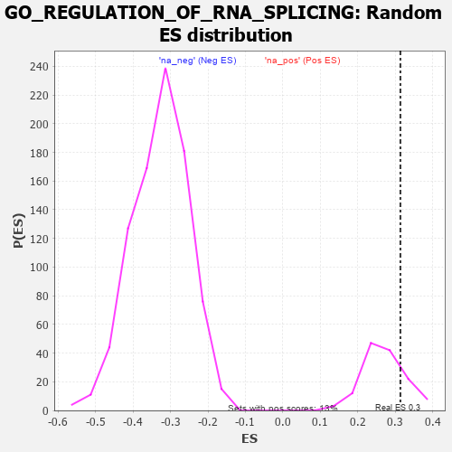

| | | Dataset | 7d |
| Phenotype | NoPhenotypeAvailable |
| Upregulated in class | na_pos |
| GeneSet | GO_REGULATION_OF_RNA_SPLICING |
| Enrichment Score (ES) | 0.3137746 |
| Normalized Enrichment Score (NES) | 1.1648597 |
| Nominal p-value | 0.20895523 |
| FDR q-value | 0.5218423 |
| FWER p-Value | 1.0 |
Table: GSEA Results Summary

Fig 1: Enrichment plot: GO_REGULATION_OF_RNA_SPLICING
Profile of the Running ES Score & Positions of GeneSet Members on the Rank Ordered List
| PROBE | GENE SYMBOL | GENE_TITLE | RANK IN GENE LIST | RANK METRIC SCORE | RUNNING ES | CORE ENRICHMENT | | 1 | PCBP4 | | | 44 | 2.875 | 0.1123 | Yes |
| 2 | SRSF9 | | | 240 | 0.950 | 0.1266 | Yes |
| 3 | LARP7 | | | 369 | 0.731 | 0.1404 | Yes |
| 4 | MYOD1 | | | 504 | 0.628 | 0.1492 | Yes |
| 5 | SF3B4 | | | 521 | 0.622 | 0.1726 | Yes |
| 6 | JMJD6 | | | 553 | 0.613 | 0.1938 | Yes |
| 7 | RBM4 | | | 649 | 0.576 | 0.2055 | Yes |
| 8 | SAP18 | | | 850 | 0.519 | 0.2015 | Yes |
| 9 | CWC22 | | | 938 | 0.498 | 0.2109 | Yes |
| 10 | ZPR1 | | | 967 | 0.491 | 0.2274 | Yes |
| 11 | RBM15 | | | 1057 | 0.473 | 0.2356 | Yes |
| 12 | RBM42 | | | 1145 | 0.455 | 0.2432 | Yes |
| 13 | GRSF1 | | | 1164 | 0.452 | 0.2594 | Yes |
| 14 | RBM10 | | | 1430 | 0.404 | 0.2425 | Yes |
| 15 | PTBP1 | | | 1441 | 0.402 | 0.2577 | Yes |
| 16 | U2AF2 | | | 1466 | 0.396 | 0.2709 | Yes |
| 17 | SON | | | 1538 | 0.385 | 0.2777 | Yes |
| 18 | ESRP1 | | | 1653 | 0.364 | 0.2783 | Yes |
| 19 | PTBP3 | | | 1763 | 0.344 | 0.2786 | Yes |
| 20 | FMR1 | | | 1816 | 0.334 | 0.2857 | Yes |
| 21 | NSRP1 | | | 2028 | 0.301 | 0.2714 | Yes |
| 22 | SART3 | | | 2084 | 0.293 | 0.2764 | Yes |
| 23 | TRA2A | | | 2125 | 0.287 | 0.2831 | Yes |
| 24 | C1QBP | | | 2189 | 0.278 | 0.2866 | Yes |
| 25 | SRSF1 | | | 2252 | 0.267 | 0.2897 | Yes |
| 26 | REST | | | 2308 | 0.259 | 0.2933 | Yes |
| 27 | SRSF4 | | | 2311 | 0.258 | 0.3037 | Yes |
| 28 | CLK4 | | | 2329 | 0.256 | 0.3120 | Yes |
| 29 | RBM19 | | | 2396 | 0.246 | 0.3138 | Yes |
| 30 | SRSF3 | | | 2696 | 0.199 | 0.2841 | No |
| 31 | CIRBP | | | 2876 | 0.170 | 0.2685 | No |
| 32 | RBM5 | | | 2910 | 0.164 | 0.2710 | No |
| 33 | RBM4B | | | 2918 | 0.163 | 0.2768 | No |
| 34 | RRP1B | | | 2986 | 0.152 | 0.2746 | No |
| 35 | BRDT | | | 3028 | 0.145 | 0.2753 | No |
| 36 | SMU1 | | | 3101 | 0.137 | 0.2719 | No |
| 37 | RBM22 | | | 3182 | 0.125 | 0.2669 | No |
| 38 | NUP98 | | | 3261 | 0.112 | 0.2616 | No |
| 39 | RBM8A | | | 3355 | 0.096 | 0.2538 | No |
| 40 | PQBP1 | | | 3526 | 0.072 | 0.2352 | No |
| 41 | SRSF2 | | | 3759 | 0.033 | 0.2073 | No |
| 42 | RBM39 | | | 3904 | 0.010 | 0.1895 | No |
| 43 | CDK12 | | | 4148 | -0.033 | 0.1601 | No |
| 44 | DDX17 | | | 4161 | -0.035 | 0.1600 | No |
| 45 | SNW1 | | | 4514 | -0.096 | 0.1195 | No |
| 46 | CLK2 | | | 4628 | -0.124 | 0.1103 | No |
| 47 | RBM12 | | | 4690 | -0.137 | 0.1082 | No |
| 48 | SRPK2 | | | 4790 | -0.155 | 0.1020 | No |
| 49 | TRA2B | | | 4962 | -0.191 | 0.0883 | No |
| 50 | NOVA2 | | | 5118 | -0.231 | 0.0781 | No |
| 51 | NOVA1 | | | 5197 | -0.247 | 0.0784 | No |
| 52 | CELF4 | | | 5275 | -0.266 | 0.0795 | No |
| 53 | RBM25 | | | 5562 | -0.336 | 0.0572 | No |
| 54 | TIA1 | | | 5731 | -0.386 | 0.0518 | No |
| 55 | CELF5 | | | 5830 | -0.414 | 0.0563 | No |
| 56 | PRDX6 | | | 6396 | -0.615 | 0.0101 | No |
| 57 | CELF3 | | | 6475 | -0.651 | 0.0270 | No |
| 58 | PTBP2 | | | 6499 | -0.661 | 0.0512 | No |
| 59 | DDX5 | | | 7152 | -1.037 | 0.0113 | No |
| 60 | RBM38 | | | 7225 | -1.100 | 0.0472 | No |
| 61 | QKI | | | 7272 | -1.145 | 0.0884 | No |
Table: GSEA details [plain text format]

Fig 2: GO_REGULATION_OF_RNA_SPLICING: Random ES distribution
Gene set null distribution of ES for GO_REGULATION_OF_RNA_SPLICING